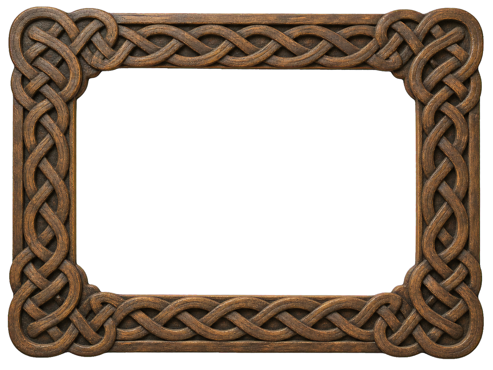
Realistic Celtic frame studies
These use heavier borders and tactile historical materials. They are shown larger so the carving and crossings can be judged properly.
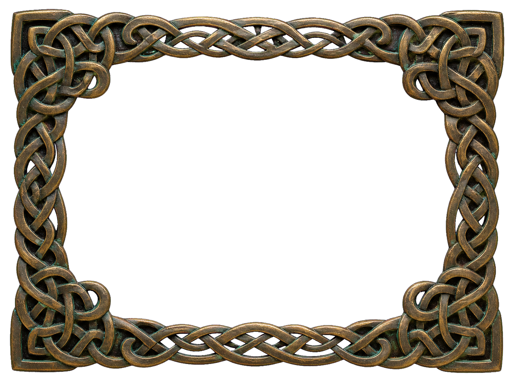
Realistic frame 2 · aged bronze
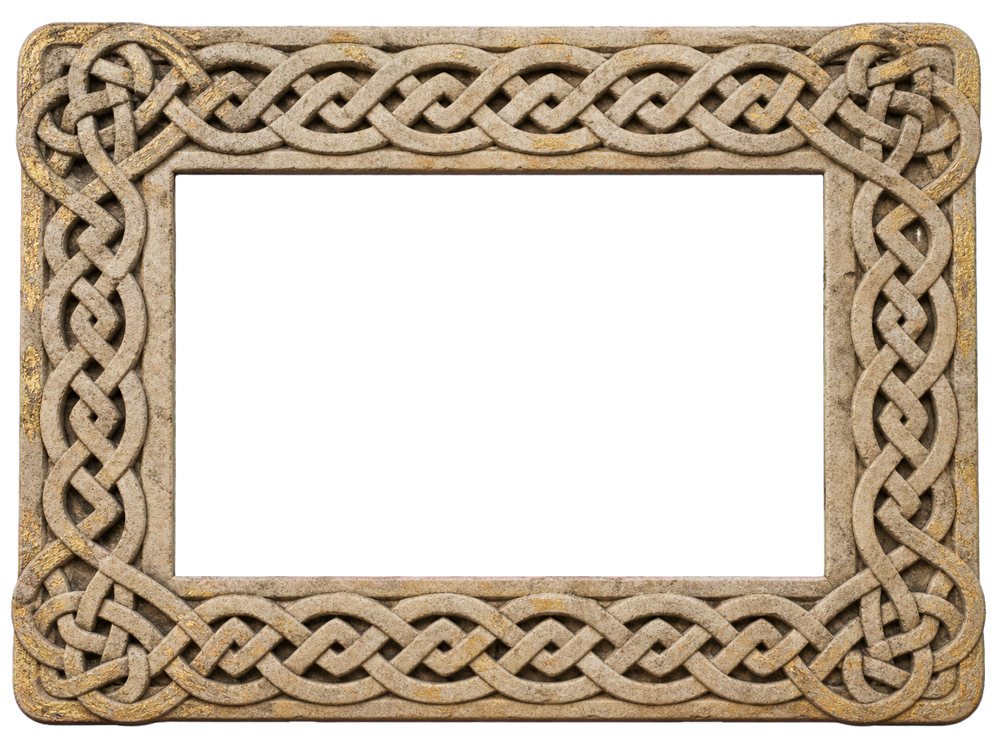
Realistic frame 3 · weathered sandstone
Earlier illustrated frame studies
Retained for comparison only. These are not intended for integration.
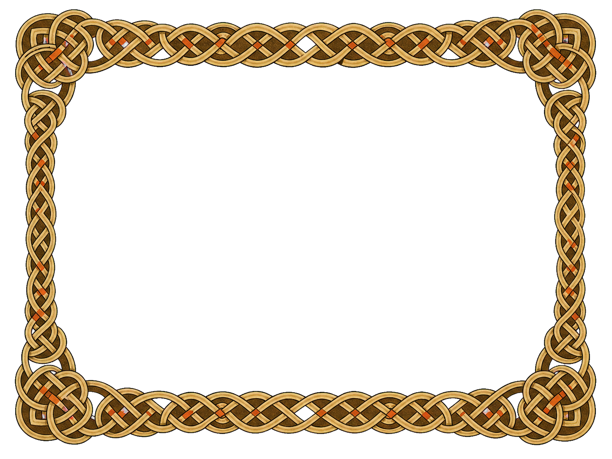
Frame 1 · manuscript ribbon
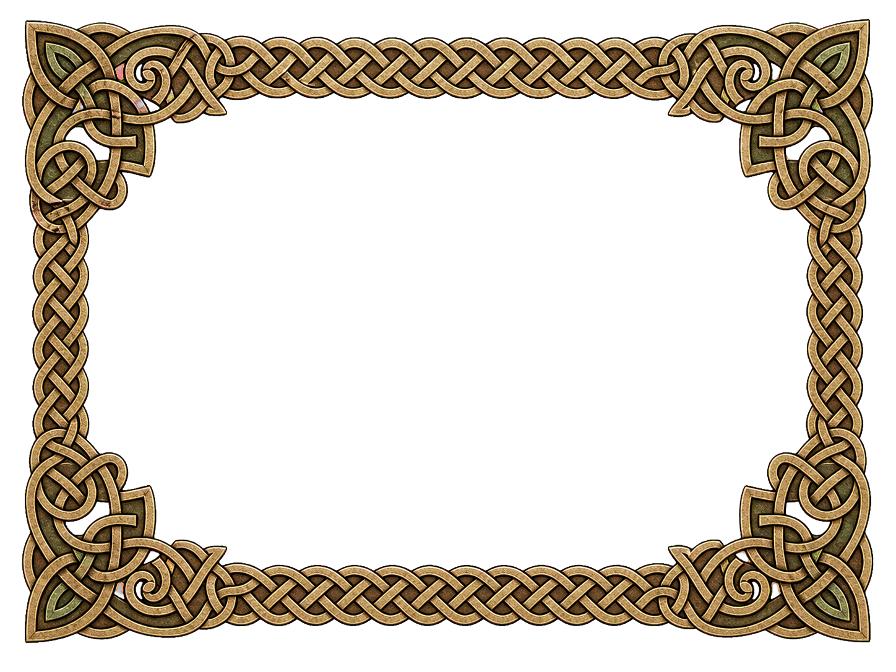
Frame 2 · carved interlace
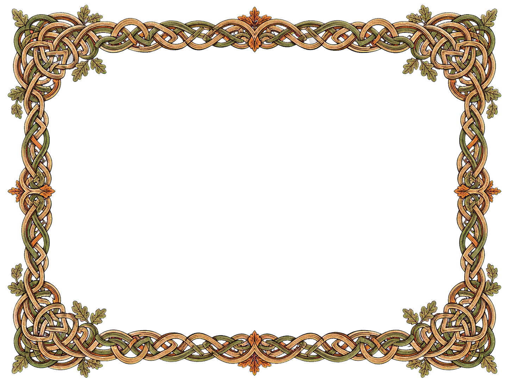
Frame 3 · oak interlace
Oak 1 orientation family
New compositions matching the approved copperplate botanical style for different layout positions.
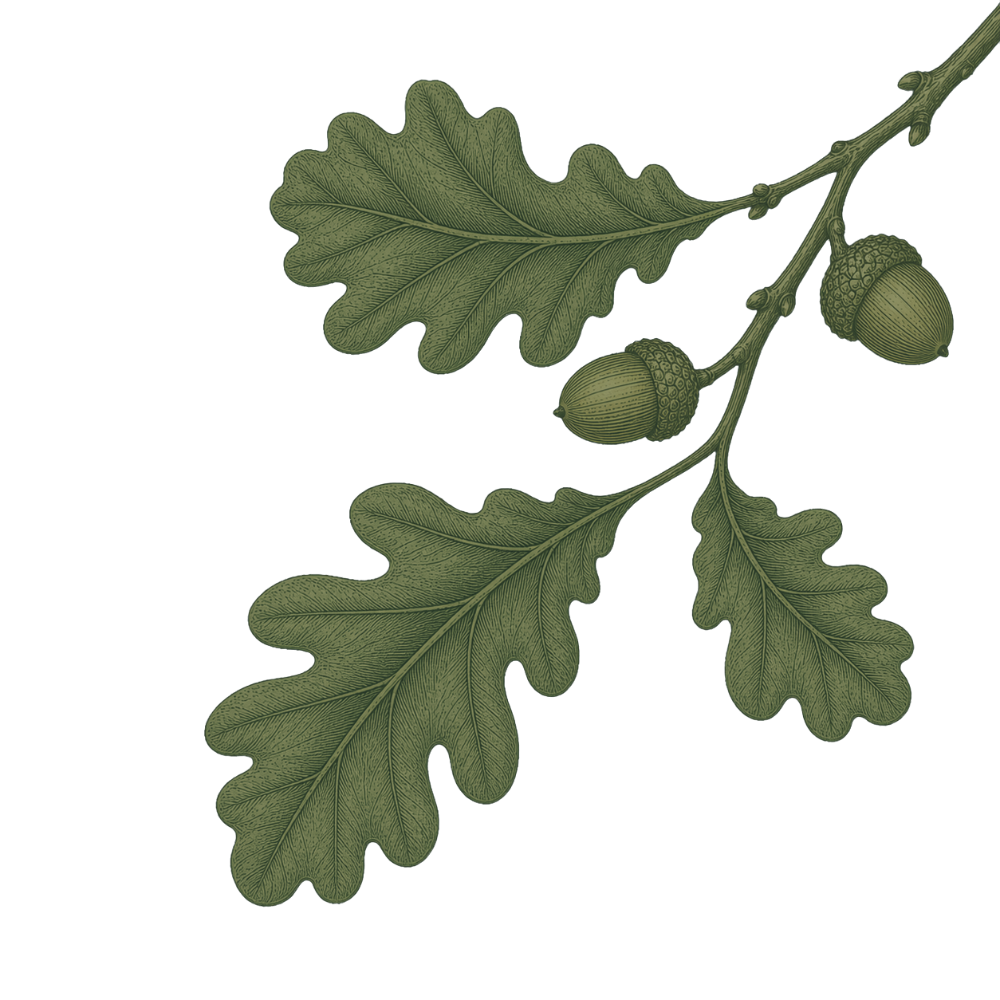
Upper-right corner · descending branch
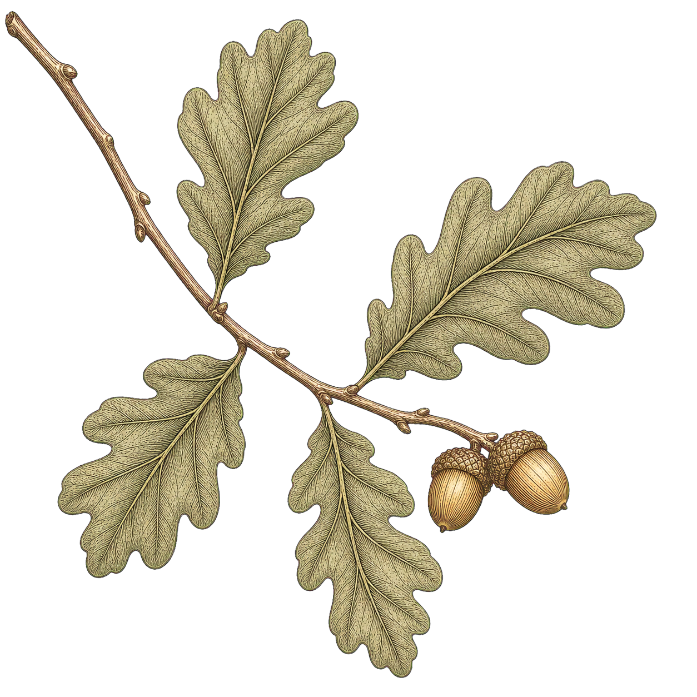
Upper-left corner · arcing branch
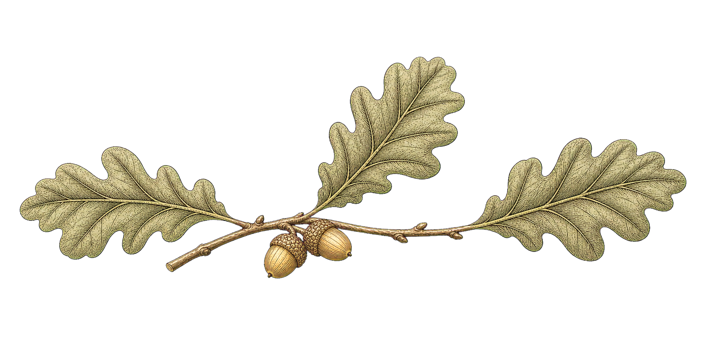
Horizontal · section divider
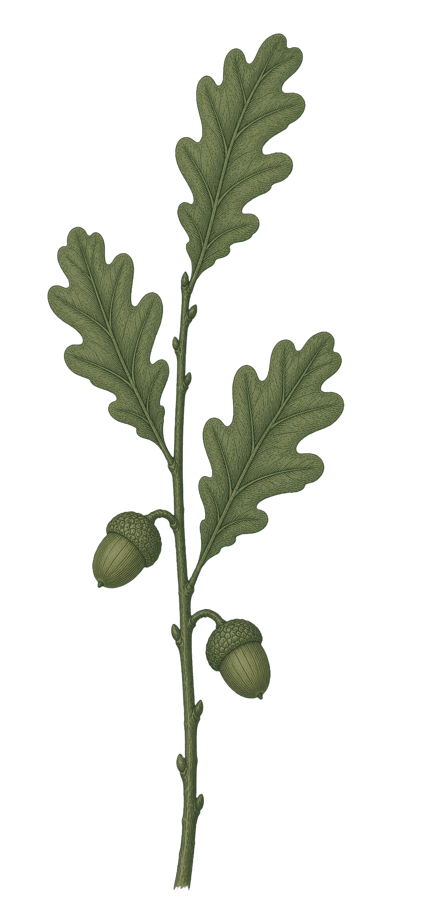
Vertical · page-edge spray
Original oak studies
Oak 1 remains the approved visual reference.
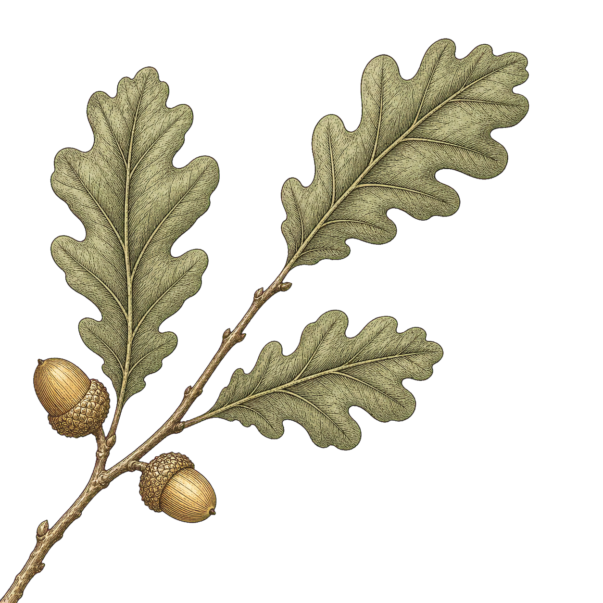
Oak 1 · botanical plate
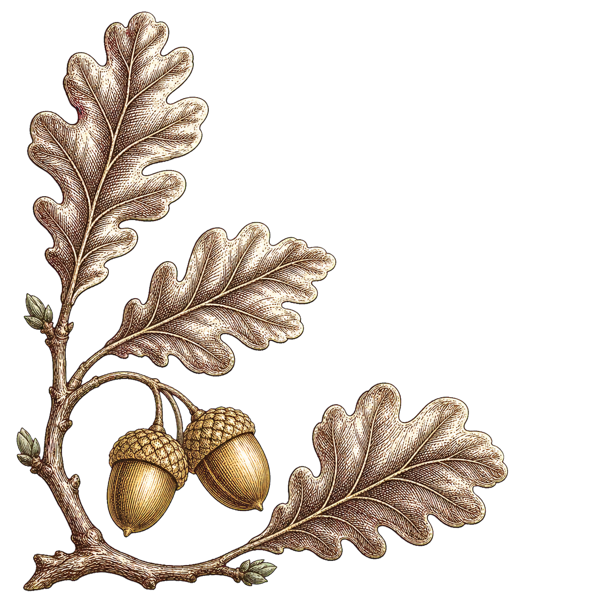
Oak 2 · wood engraving
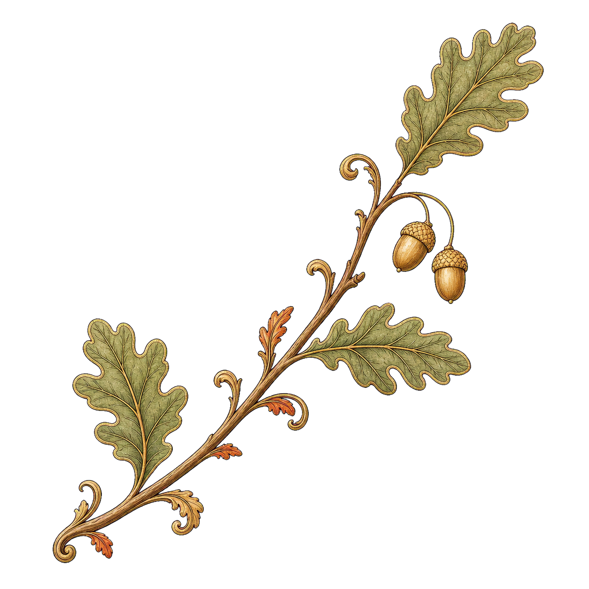
Oak 3 · illuminated flourish
This page is deliberately separate from the live design. Once a frame and oak treatment are chosen, the unsuccessful SVG experiments can be removed cleanly.